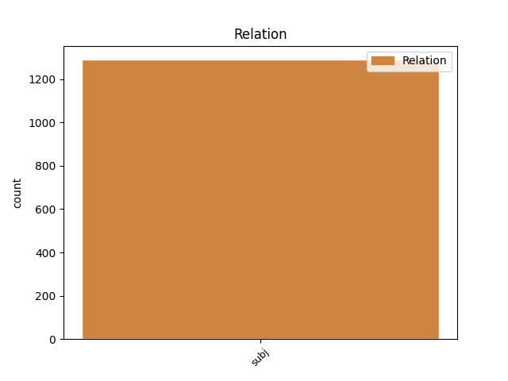
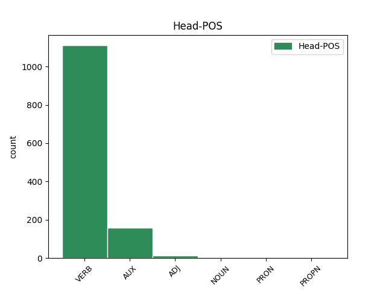
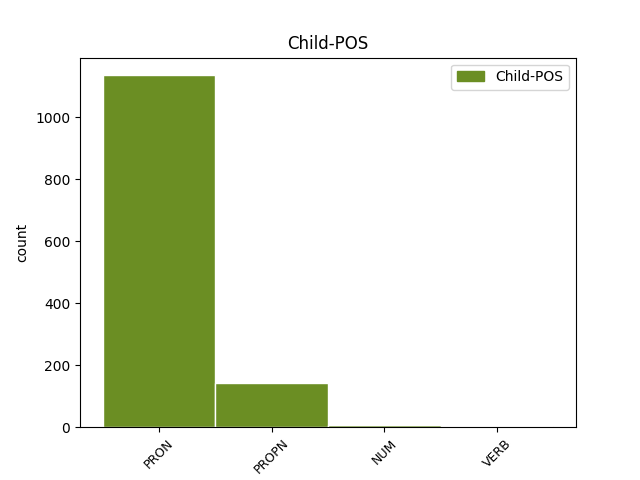

Distribution of features within this leaf



Agreement Rules sorted by frequency.
- When the dependent token is the subject(subj) of the head token, and the dependent token is PRON.
1 Kultūras _ _ _ _ 0 _ _ _
2 vardarbība _ _ _ _ 0 _ _ _
3 aizplīvuro _ _ _ _ 0 _ _ _
4 / _ _ _ _ 0 _ _ _
5 aizsedz _ _ _ _ 0 _ _ _
6 mūsu _ _ _ _ 0 _ _ _
7 morāles _ _ _ _ 0 _ _ _
8 kodu _ _ _ _ 0 _ _ _
9 realitāti _ _ _ _ 0 _ _ _
10 vai _ _ _ _ 0 _ _ _
11 iespaidu _ _ _ _ 0 _ _ _
12 , _ _ _ _ 0 _ _ _
13 ka _ _ _ _ 0 _ _ _
14 mēs mēs PRON pp10pnn Case=Nom|Number=Plur|Person=1|PronType=Prs 17 subj _ LvtbNodeId=a-z99-p16s5w14
15 ne _ _ _ _ 0 _ _ _
16 vienmēr _ _ _ _ 0 _ _ _
17 spējam spēt VERB vonipi11pan Evident=Fh|Mood=Ind|Number=Plur|Person=1|Polarity=Pos|Tense=Pres|VerbForm=Fin|Voice=Act 0 _ _ _
18 redzēt _ _ _ _ 0 _ _ _
19 vardarbības _ _ _ _ 0 _ _ _
20 aktu _ _ _ _ 0 _ _ _
21 . _ _ _ _ 0 _ _ _
1 Kā _ _ _ _ 0 _ _ _
2 norādījis norādīt VERB vmnpdmsnasnpn Aspect=Perf|Case=Nom|Definite=Ind|Degree=Pos|Gender=Masc|Number=Sing|Polarity=Pos|Tense=Past|VerbForm=Part|Voice=Act 0 _ _ _
3 tiesību _ _ _ _ 0 _ _ _
4 zinātnieks _ _ _ _ 0 _ _ _
5 Egils Egils PROPN npmsn1 Case=Nom|Gender=Masc|Number=Sing 2 subj _ LvtbNodeId=a-z87-p29s1w5
6 Levits _ _ _ _ 0 _ _ _
7 [ _ _ _ _ 0 _ _ _
8 Levits _ _ _ _ 0 _ _ _
9 , _ _ _ _ 0 _ _ _
10 2014 _ _ _ _ 0 _ _ _
11 ] _ _ _ _ 0 _ _ _
12 , _ _ _ _ 0 _ _ _
13 ģimene _ _ _ _ 0 _ _ _
14 ir _ _ _ _ 0 _ _ _
15 ļoti _ _ _ _ 0 _ _ _
16 sena _ _ _ _ 0 _ _ _
17 , _ _ _ _ 0 _ _ _
18 viena _ _ _ _ 0 _ _ _
19 no _ _ _ _ 0 _ _ _
20 sākotnējām _ _ _ _ 0 _ _ _
21 sabiedrības _ _ _ _ 0 _ _ _
22 vienībām _ _ _ _ 0 _ _ _
23 . _ _ _ _ 0 _ _ _
1 Līdz _ _ _ _ 0 _ _ _
2 2012. _ _ _ _ 0 _ _ _
3 gada _ _ _ _ 0 _ _ _
4 nogalei _ _ _ _ 0 _ _ _
5 A. _ _ _ _ 0 _ _ _
6 Hermanis _ _ _ _ 0 _ _ _
7 iestudējis _ _ _ _ 0 _ _ _
8 piecdesmit _ _ _ _ 0 _ _ _
9 deviņas _ _ _ _ 0 _ _ _
10 izrādes _ _ _ _ 0 _ _ _
11 – _ _ _ _ 0 _ _ _
12 no _ _ _ _ 0 _ _ _
13 tām _ _ _ _ 0 _ _ _
14 deviņas deviņi NUM mcsfpn Case=Nom|Gender=Fem|Number=Plur|NumType=Card 15 subj _ LvtbNodeId=a-z83-p3s1w14
15 tapušas tapt VERB vmnpdfpnasnpn Aspect=Perf|Case=Nom|Definite=Ind|Degree=Pos|Gender=Fem|Number=Plur|Polarity=Pos|Tense=Past|VerbForm=Part|Voice=Act 0 _ _ _
16 Vācijā _ _ _ _ 0 _ _ _
17 , _ _ _ _ 0 _ _ _
18 četras _ _ _ _ 0 _ _ _
19 Austrijā _ _ _ _ 0 _ _ _
20 , _ _ _ _ 0 _ _ _
21 trīs _ _ _ _ 0 _ _ _
22 Šveicē _ _ _ _ 0 _ _ _
23 , _ _ _ _ 0 _ _ _
24 divas _ _ _ _ 0 _ _ _
25 Igaunijā _ _ _ _ 0 _ _ _
26 , _ _ _ _ 0 _ _ _
27 pa _ _ _ _ 0 _ _ _
28 vienai _ _ _ _ 0 _ _ _
29 – _ _ _ _ 0 _ _ _
30 Itālijā _ _ _ _ 0 _ _ _
31 un _ _ _ _ 0 _ _ _
32 Krievijā _ _ _ _ 0 _ _ _
33 . _ _ _ _ 0 _ _ _
1 Veterinārajās _ _ _ _ 0 _ _ _
2 aptiekās _ _ _ _ 0 _ _ _
3 pieejami pieiet VERB vmnpdmpnppnpn Case=Nom|Definite=Ind|Degree=Pos|Gender=Masc|Number=Plur|Polarity=Pos|Tense=Pres|VerbForm=Part|Voice=Pass 0 _ _ _
4 vairāku _ _ _ _ 0 _ _ _
5 veidu _ _ _ _ 0 _ _ _
6 ērču _ _ _ _ 0 _ _ _
7 izvelkamie izvilkt VERB vmnpdmpnppypn Case=Nom|Definite=Def|Degree=Pos|Gender=Masc|Number=Plur|Polarity=Pos|Tense=Pres|VerbForm=Part|Voice=Pass 3 subj _ LvtbNodeId=a-p13260-p2s2w7|SpaceAfter=No
8 . _ _ _ _ 0 _ _ _
Disagree Examples:
1 - _ _ _ _ 0 _ _ _
2 Tu tu PRON pp20snn Case=Nom|Number=Sing|Person=2|PronType=Prs 3 subj _ LvtbNodeId=a-d121-p222s1w2
3 brauc braukt VERB vmnipt12pan Evident=Fh|Mood=Ind|Number=Plur|Person=2|Polarity=Pos|Tense=Pres|VerbForm=Fin|Voice=Act 0 _ _ _
4 uz _ _ _ _ 0 _ _ _
5 pilsētu _ _ _ _ 0 _ _ _
6 ? _ _ _ _ 0 _ _ _
1 Tā _ _ _ _ 0 _ _ _
2 nu _ _ _ _ 0 _ _ _
3 mēs _ _ _ _ 0 _ _ _
4 ar _ _ _ _ 0 _ _ _
5 Doru _ _ _ _ 0 _ _ _
6 , _ _ _ _ 0 _ _ _
7 viena viens NUM mcsfsn Case=Nom|Gender=Fem|Number=Sing|NumType=Card 9 subj _ LvtbNodeId=a-d136-p231s1w7
8 otru _ _ _ _ 0 _ _ _
9 pavadīdamas pavadīt VERB vmnpdfpnapn0n Aspect=Imp|Case=Nom|Definite=Ind|Gender=Fem|Number=Plur|Polarity=Pos|Tense=Pres|VerbForm=Part|Voice=Act 0 _ _ _
10 , _ _ _ _ 0 _ _ _
11 izgājām _ _ _ _ 0 _ _ _
12 šīs _ _ _ _ 0 _ _ _
13 dienas _ _ _ _ 0 _ _ _
14 finiša _ _ _ _ 0 _ _ _
15 taisnē _ _ _ _ 0 _ _ _
16 un _ _ _ _ 0 _ _ _
17 devāmies _ _ _ _ 0 _ _ _
18 uz _ _ _ _ 0 _ _ _
19 autobusu _ _ _ _ 0 _ _ _
20 pieturu _ _ _ _ 0 _ _ _
21 . _ _ _ _ 0 _ _ _
1 Māmiņas _ _ _ _ 0 _ _ _
2 dzimto _ _ _ _ 0 _ _ _
3 pilsētu _ _ _ _ 0 _ _ _
4 Jelgavu _ _ _ _ 0 _ _ _
5 , _ _ _ _ 0 _ _ _
6 kur _ _ _ _ 0 _ _ _
7 pasaulē _ _ _ _ 0 _ _ _
8 nāca _ _ _ _ 0 _ _ _
9 arī _ _ _ _ 0 _ _ _
10 vecāka _ _ _ _ 0 _ _ _
11 meita _ _ _ _ 0 _ _ _
12 Megija _ _ _ _ 0 _ _ _
13 , _ _ _ _ 0 _ _ _
14 par _ _ _ _ 0 _ _ _
15 jaunākās _ _ _ _ 0 _ _ _
16 atvasītes _ _ _ _ 0 _ _ _
17 dzimšanas _ _ _ _ 0 _ _ _
18 vietu _ _ _ _ 0 _ _ _
19 izraudzījušies izraudzīties VERB vmypdmpnasnpn Aspect=Perf|Case=Nom|Definite=Ind|Degree=Pos|Gender=Masc|Number=Plur|Polarity=Pos|Reflex=Yes|Tense=Past|VerbForm=Part|Voice=Act 0 _ _ _
20 rīdzinieki _ _ _ _ 0 _ _ _
21 Daina Daina PROPN npfsn4 Case=Nom|Gender=Fem|Number=Sing 19 subj _ LvtbNodeId=a-p10575-p6s1w21
22 Matīsa _ _ _ _ 0 _ _ _
23 un _ _ _ _ 0 _ _ _
24 Māris _ _ _ _ 0 _ _ _
25 Sprancmanis _ _ _ _ 0 _ _ _
26 . _ _ _ _ 0 _ _ _
1 Inese Inese PROPN npfsn5 Case=Nom|Gender=Fem|Number=Sing 5 subj _ LvtbNodeId=a-p10762-p4s3w1
2 un _ _ _ _ 0 _ _ _
3 Andris _ _ _ _ 0 _ _ _
4 Runči _ _ _ _ 0 _ _ _
5 gandarīti gandarīt VERB vmnpdmpnpsnpn Aspect=Perf|Case=Nom|Definite=Ind|Degree=Pos|Gender=Masc|Number=Plur|Polarity=Pos|Tense=Past|VerbForm=Part|Voice=Pass 0 _ _ _
6 , _ _ _ _ 0 _ _ _
7 ka _ _ _ _ 0 _ _ _
8 aktieru _ _ _ _ 0 _ _ _
9 trupa _ _ _ _ 0 _ _ _
10 ar _ _ _ _ 0 _ _ _
11 dekorācijām _ _ _ _ 0 _ _ _
12 var _ _ _ _ 0 _ _ _
13 pie _ _ _ _ 0 _ _ _
14 skatītājiem _ _ _ _ 0 _ _ _
15 ierasties _ _ _ _ 0 _ _ _
16 vienā _ _ _ _ 0 _ _ _
17 busiņā _ _ _ _ 0 _ _ _
18 , _ _ _ _ 0 _ _ _
19 viņi _ _ _ _ 0 _ _ _
20 labprāt _ _ _ _ 0 _ _ _
21 apmeklēšot _ _ _ _ 0 _ _ _
22 līdzīgas _ _ _ _ 0 _ _ _
23 izrādes _ _ _ _ 0 _ _ _
24 arī _ _ _ _ 0 _ _ _
25 turpmāk _ _ _ _ 0 _ _ _
26 . _ _ _ _ 0 _ _ _
1 Taču _ _ _ _ 0 _ _ _
2 dramatiskāka _ _ _ _ 0 _ _ _
3 situācija _ _ _ _ 0 _ _ _
4 ir _ _ _ _ 0 _ _ _
5 izveidojusies _ _ _ _ 0 _ _ _
6 Alūksnē _ _ _ _ 0 _ _ _
7 – _ _ _ _ 0 _ _ _
8 vairāk _ _ _ _ 0 _ _ _
9 nekā _ _ _ _ 0 _ _ _
10 tūkstotis tūkstotis NUM mcsmsn Case=Nom|Gender=Masc|Number=Sing|NumType=Card 13 subj _ LvtbNodeId=a-p12360-p3s4w10
11 pilsētas _ _ _ _ 0 _ _ _
12 iedzīvotāju _ _ _ _ 0 _ _ _
13 palikuši palikt VERB vmnpdmpnasnpn Aspect=Perf|Case=Nom|Definite=Ind|Degree=Pos|Gender=Masc|Number=Plur|Polarity=Pos|Tense=Past|VerbForm=Part|Voice=Act 0 _ _ _
14 vispār _ _ _ _ 0 _ _ _
15 bez _ _ _ _ 0 _ _ _
16 ārsta _ _ _ _ 0 _ _ _
17 , _ _ _ _ 0 _ _ _
18 jo _ _ _ _ 0 _ _ _
19 ģimenes _ _ _ _ 0 _ _ _
20 dakteris _ _ _ _ 0 _ _ _
21 pārvācies _ _ _ _ 0 _ _ _
22 uz _ _ _ _ 0 _ _ _
23 citu _ _ _ _ 0 _ _ _
24 pilsētu _ _ _ _ 0 _ _ _
25 , _ _ _ _ 0 _ _ _
26 un _ _ _ _ 0 _ _ _
27 tā _ _ _ _ 0 _ _ _
28 arī _ _ _ _ 0 _ _ _
29 netika _ _ _ _ 0 _ _ _
30 atrasts _ _ _ _ 0 _ _ _
31 neviens _ _ _ _ 0 _ _ _
32 , _ _ _ _ 0 _ _ _
33 kas _ _ _ _ 0 _ _ _
34 varētu _ _ _ _ 0 _ _ _
35 viņu _ _ _ _ 0 _ _ _
36 aizstāt _ _ _ _ 0 _ _ _
37 . _ _ _ _ 0 _ _ _